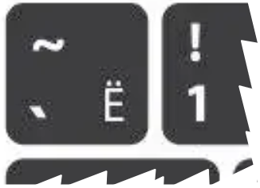

Bul sayt zárúr waqıtta, qaraqalpaq álipbesine tez hám qıyınshılıqsız jetisiw ushın islep shıǵıldı.
Álbette, jeke qurılmalarıńızǵa
"Qaraqalpaq tili klaviatura maketleri"n ornatıw usınıs etiledi.
Ornatıw imkaniyatı bolmasa sayt sizge qol keledi. Saytdan paydalanıw júda ápiwayi. Eger siz saytqa kompyuter arqalı kirip atırǵan bolsańız,
klaviaturańızdaǵı  (
` ~ Ë) túymeni
(ádette klaviatura joqarǵı shep múyeshinde, "esc" túymesi astında jaylasadı) basıp
yáki klaviatura bolmasa jazıw maydanshasınıń shep joqarǵı múyeshindegi
túymeni basip
kútiw rejimi ne ótiledi, hám izinen ózlerıńizge kerekli hárip sıńarın basıw arqalı erisesiz.
Eger "
` ~ Ë" belgilerin jazıwdı qáleseńiz,
kútiw rejiminde turǵan halda kerekli túymeni basıw arqalı jazsańız boladı.
| Latınsha háripler hám olardıń klaviaturada berilmegen sıńarları |
| Aa |
Gg |
Ii |
Nn |
Oo |
Uu |
| Áá |
Ǵǵ |
Íı |
Ńń |
Óó |
Úú |
| Kirillshe háripler hám olardıń klaviaturada berilmegen sıńarları |
| Аа |
Гг |
Кк |
Нн |
Оо |
Ии |
Уу |
Хх |
| Әә |
Ғғ |
Ққ |
Ңң |
Өө |
Үү |
Ўў |
Ҳҳ |